Debye v4 polish: before and after
The rules: AI usually does this, Debye does this
Round 4. An independent agent critiqued the screens with impeccable's rubric. I fixed what it found, then a second agent, which had seen none of the earlier reasoning, re-scored them, and I fixed its top six too.
| Independent score | Round 3 | Round 4 |
|---|---|---|
| Cognitive-load failures (lower is better) | 4 of 8, high | 2 of 8, moderate |
| Aesthetic and minimalist design (0–4) | 2 | 3 |
| Match with the real world (0–4) | 2 | 3 |
| Staff case: could another SaaS use it? | About 60% generic | No, the strongest screen |
| Usual AI tells | Several | None found |
Direction
- Product
- Turns a tenant's WhatsApp message into a diagnosed, approved repair job for reltix staff and partner trades
- Character
- Calm, exact, on the tenant's side
- World
- The property manager's case file and the tradesperson's job sheet
- Moments
- The approval card for staff, the job sheet with its budget for partners, the composer for tenants
- Signature
- The case track: eight short segments, one per station of a case, with the current station in wine. It appears wherever a case appears.
1. Staff case, approval
- The recommended partner is the page's one bright element: a single card with who they are, why Debye picked them, the price and Approve. The two alternatives sit underneath as a quiet table showing the deciding reason.
- No card inside a card. The approval sits on the page itself, and the WhatsApp thread fills its panel edge to edge.
- One status line plus the case track in the header, instead of three pills. Cause and confidence appear once. One time format (08–10). Consent is now its own step in Progress.
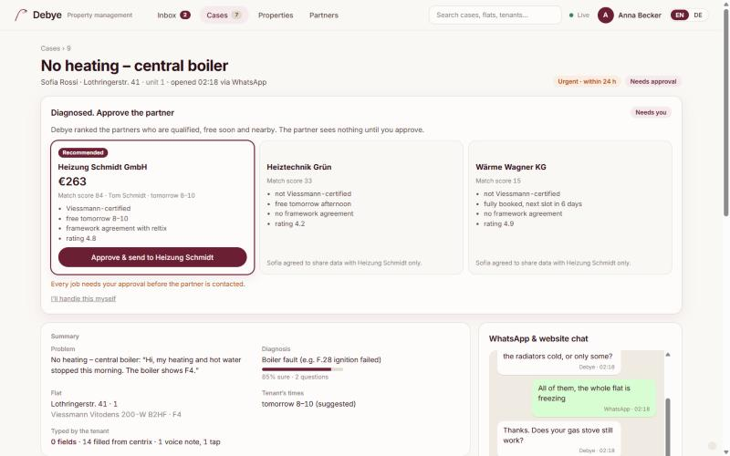
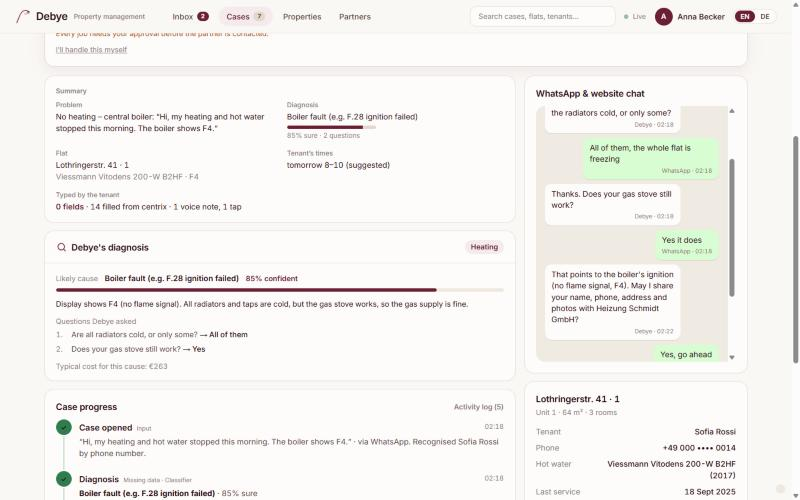


2. Staff inbox
- Every row has the same three lines: name, case track and time; problem; status dot and last message. Rows are all one height.
- The summary gives three facts and one sentence about where Debye is. One primary action. A loading skeleton replaces the blank pane (see States).
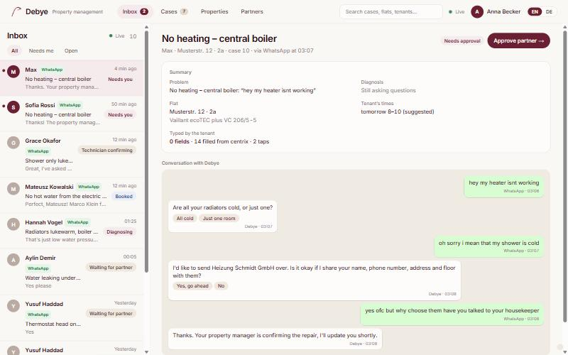
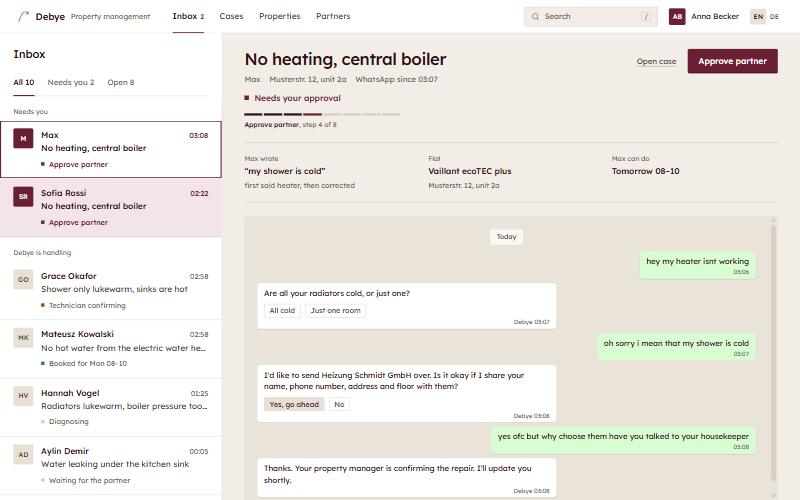
3. Partner, new job
- The grey 3D sphere is gone. "No photos yet" is a plain line, not a box inside the card.
- The title comes first and the details follow, with no kicker above. Then the real pressure, "1 h 42 min left to accept", and the case track. The budget is shown once, as the one large figure.
- Accept is wine, not green. Time slots are check chips.
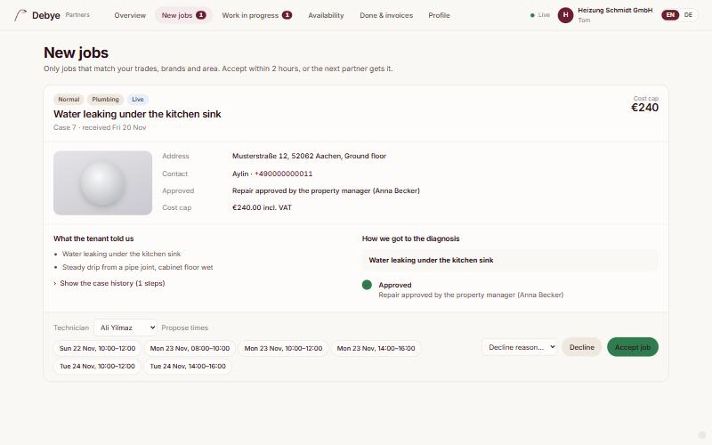

4. Tenant home
- The ask sits on the left with the cases list beside it, stacked on phones. The logo appears once. The composer is the bright element and gets a wine ring when focused.
- "Good morning, Luka." becomes "What's wrong at home, Luka?". The ➤ glyph becomes a line arrow, and WhatsApp and phone are quiet links.
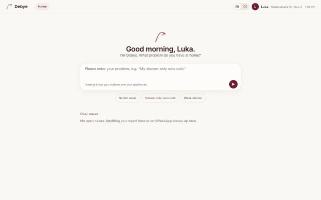
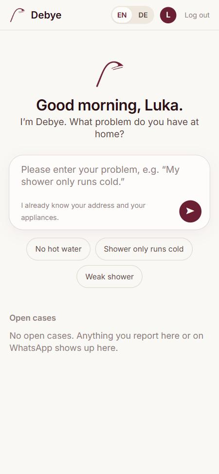

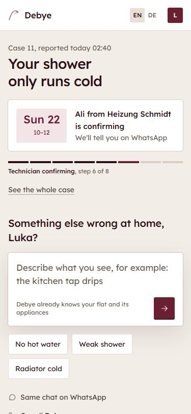
5. Partner welcome
- One headline, from the client's own copy minus the unverified "thousands of rented homes". Line icons replace 🔧📸💶.
- The empty "Welcome" side now shows a real job sheet: cause, boiler, slot, what Debye asked and the approved budget.
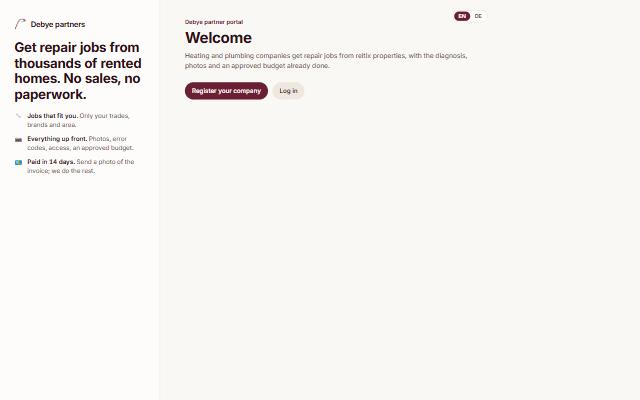
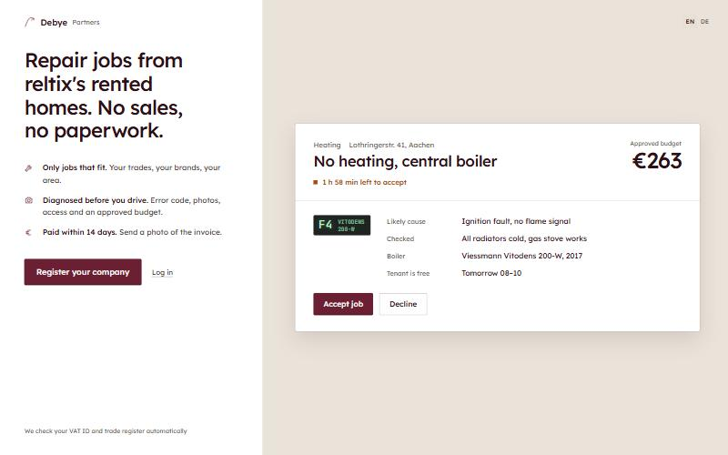
6. States and phone layouts
- New: a loading skeleton in the shape of real rows, empty states that say what will appear and why, and a not-found page that keeps the top bar.
- Staff case and partner job now collapse to one column at phone width, with no sideways scroll at 375 px.

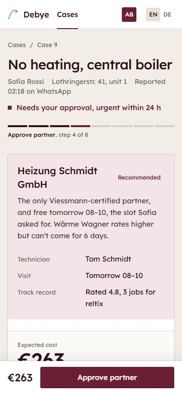
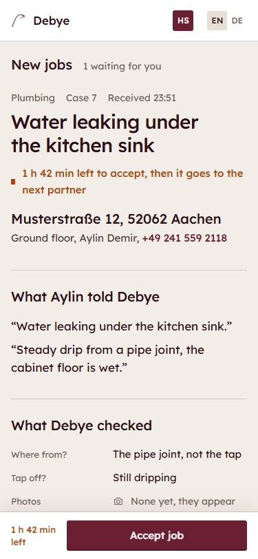